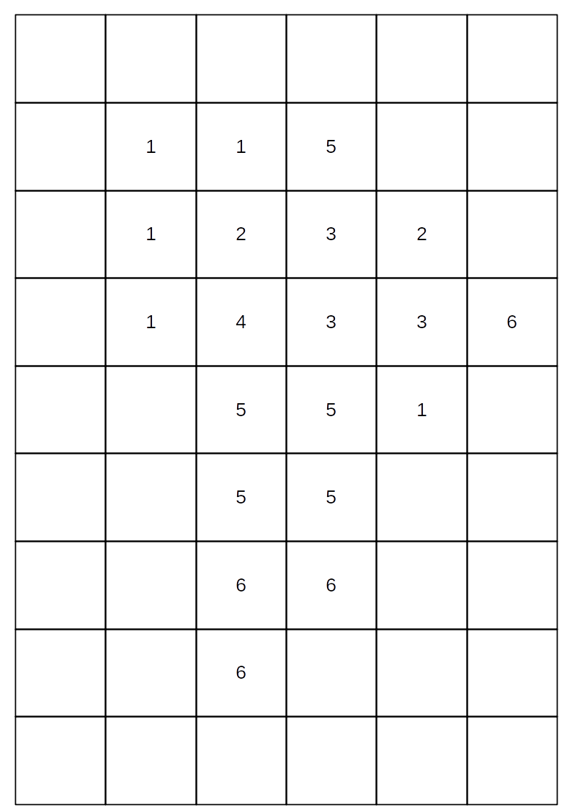
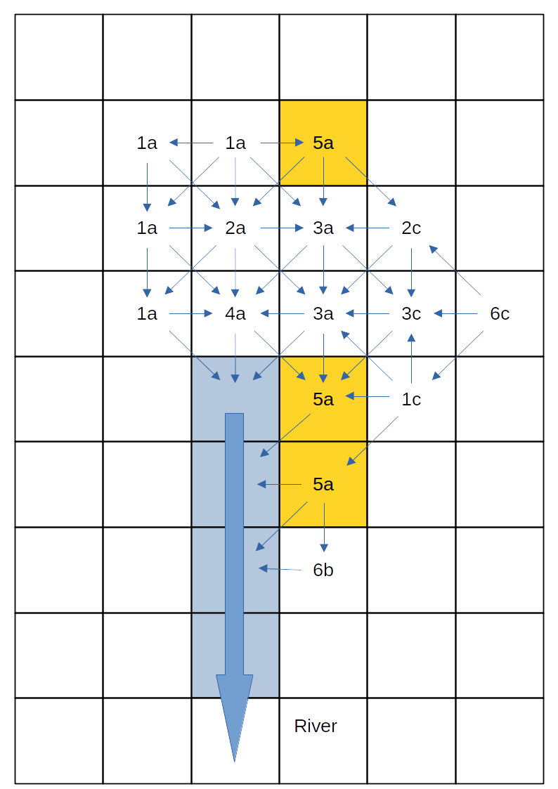
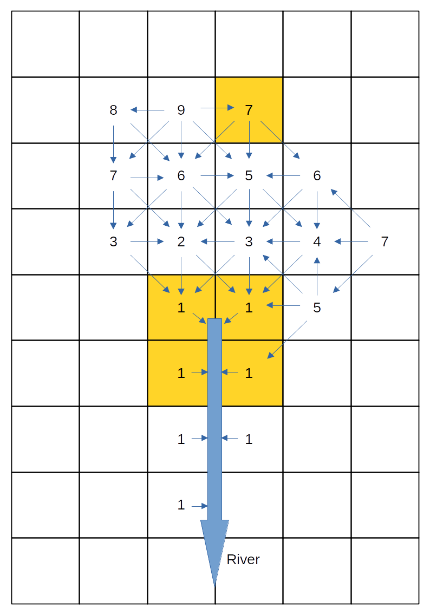
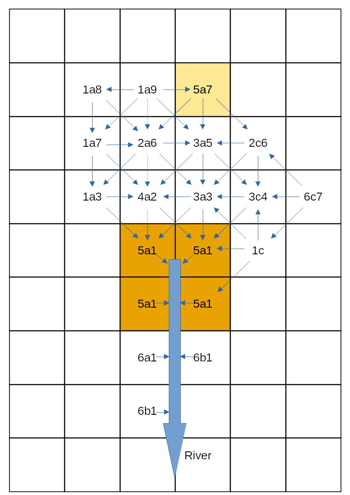
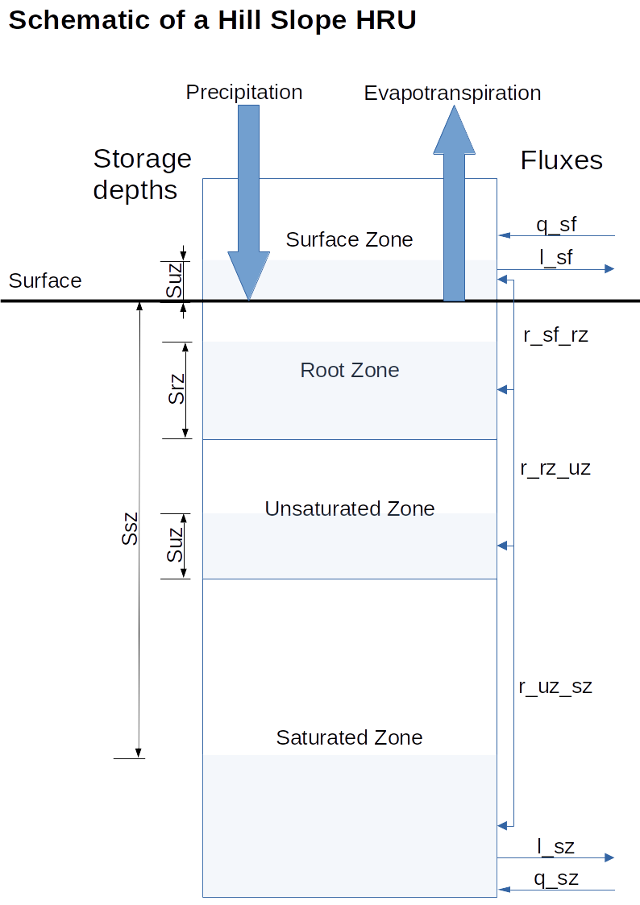

This training course is split into two parts. Part 1 aims to:
dynatop and dynatopGIS packagesdynatop and
dynatopGIS packages with a hands on exampledynatop and dynatopGIS packagesPart 2 of the course is targeted at those that wish to extent or develop the packages and covers:
dynatop by forking and
cloning the software repositoryThis is a course on hydrological modelling using a R software package. Part 1 presumes that you have at least a basic knowledge of hydrology and ideally some experience of R. Part 2 requires a more detailed knowledge of R along with some knowledge of the git version control system.
Useful primers for R can be found on multiple websites such as that of Hadley Wickham or on CRAN but complete knowledge of their contents is not expected.
To make use of the examples on which Part 1 of the course is based requires
Installation instructions for R are available from CRAN for Linux, Windows and Mac. Full details of the R version and packages used in building this version of the training material can be found here.
While it is possible to complete the course using the built in R GUI’s for Windows and Mac it is recommended to install an editor with syntax highlighting. Popular choices include the Rstudio IDE, VSCode (Instructions here) or Emacs with ESS all of which provide an integrated development environment.
dynatop and dynatopGISThese and there dependencies can be install in the standard way for R packages. At the R command prompt type
install.packages('dynatop', repos =c('https://waternumbers.r-universe.dev','https://cloud.r-project.org'))
install.packages('dynatopGIS', repos = c('https://waternumbers.r-universe.dev', 'https://cloud.r-project.org'))For completing Part 2 of the course which focuses on developing dynatop further software is required.
Details on installing git can be found on the software’s webpage. It is presumed that git is available from the command line.
Pandoc provides installation instructions.
The most efficient method of installing the tools required for building R packages depends upon the platform:
This is required to fork and alter the source code.
Download the data for the examples as a zip file. Extracting this should give a directory “eden_data” with four subdirectories. In the code provided is is presumed that the working directory of the R session is “eden_data”.
To save copying and pasting from the web pages the R code used in the training course is available. These scripts should be used alongside the course material.
This a simplified, opinionated introduction. The original motivation for Dynamic TOPMODEL can be found in Beven & Freer, 2001
Dynamic TOPMODEL was originally conceived as “A new version of the rainfall-runoff model TOPMODEL is described in which the assumption of a quasi-steady state saturated zone configuration is replaced by a kinematic wave routing of subsurface flow…” allowing for “…the simulation of dynamically variable up-slope contributing areas.”
Revisiting the idea of TOPMODEL (which has done this mainly for hill slopes, but see Peters et al. 2003) a model is formulated by
In the following these aspects are outlined with reference to the
implementation of Dynamic TOPMODEL in the dynatop and
dynatopGIS packages.
The location of areas with a hydrological similar response is only every going to be partially captured by spatial data. Past TOPMODEL and Dynamic TOPMODEL applications have used classifications based on a topographic index given by the logarithm of up-slope area divided by the local gradient. Using the up-slope area gives some spatial ordering to the classes, but (as we will see with the Eden data) it is not complete. Consider a small catchment represented by a raster of spatial cells with the following topographic index classes

Since land use could influence the evapotranspiration and infiltration properties a second classification might be desirable. For the small catchment the land use classes are shown below
Combing these topographic index and land use classes gives one initial class for each unique combination.
In keeping with earlier spatial analysis TOPMODEL and Dynamic TOPMODEL applications connectivity (flow directions) is assumed to be determined by the surface gradient with any down-slope region receiving flow. This gives a high degree of connectivity between the spatial cells. If a river intercepts a cell it is assumed that both the surface and subsurface flow direction change to follow the river course.The following figure shows the connectivity for the small catchment, with the river cells highlighted in blue.

Each class is represented by a single HRU, the inflows to which are averaged from the inflows to all the spatial cells of that class. Does this make sense for class 5a, which is both in the upper reaches of the catchment but also adjacent to the river?
The dynatop author would argue not. To represent the
spatial positioning the catchment can be banded using the connectivity -
all cells in a given band receive flows only from those in a higher
band. For the small catchment this looks like the following

Combing this into the classification gives

which further separates out the 5a class to the areas close to and further from the river. This demonstrates the banding gives a further level of spatial refinement to the classification while allowing a for simplification in the catchment representation.
Introducing the band into the classification has a further advantage. Solving the HRUs starting with those in the highest band ensures that inflows at the current time step are available for use in the numeric solution. This allow the use of computation techniques that are more robust to the choice of solution time step.
The numeric scheme implemented in the
dynatoppackage makes use of an ordering so that the HRU inflows for the current time step are available. Although other options could be used it is strongly recommended that the default banding scheme is used.
Each Hydrological Response Unit HRU represents a parameterised version of a different part of the hydrological system. The representation of each HRU is made up of the four zones:
The following schematic shows the four zones and the fluxes between them

As shown in the schematic fluxes are passed between the HRUs at two levels, the surface and the saturated zones.
To allow for some flexibility in the dynamics of the HRU different
representations can be used for each zone. The governing equation and
numerical solution of these are given in a vignette
of dynatop. A few key points are:
The following schematic outlines the stages resulting a working
Dynamic TOPMODEL for a catchment. It highlights where the
dynatopGIS and dynatop packages fit into this
process.

Schematic of a Dynamic TOPMODEL construction
As we will see in the example the dynatopGIS
package can help
dynatopThe dynatop
package allows simulation and visualisation of Dynamic TOPMODELs as well
as providing some helper for processing time series input data. Although
in this training presumes that model for dynatop are
generated using dynatopGIS this need not be the case so
long as the inputs to dynatop are of the correct
format.
The dynatopGIS and dynatop packages
implement structured, object orientated, data flows. The packages are
written using the object orientated framework provided by the
R6 package. This means that some aspects of working with
the objects may appear idiosyncratic for some R users. In this training
these problems are largely obscured, except for the call structure.
However, before adapting the code, or doing more complex analysis users
should read about R6 class objects (e.g. in the
R6 package vignettes or in the Advanced R book). One
particular gotcha is when copying an object. Using
my_new_object <- my_objectcreates a pointer, that is altering my_new_object also
alters my_object. To create a new independent copy of
my_object use
my_new_object <- my_object$clone()To explore and pre-process the GIS data for the Eden catchment.
R has multiple packages for the processing and analysis spatial data.
A good overview is given in the Spatial Task
View on CRAN. For this part of the training course we use a set of
mature package terra which is a dependency of
dynatopGIS. Similar results could be generated with other
packages.
Attached the terra package to the R environment so that
its functions are available.
library(terra)
#> terra 1.7.71
library(dynatopGIS)and remember to move to the eden_data directory e.g.
setwd("../eden_data")dynatopGISTo build a Dynamic TOPMODEL the dynatopGIS package
requires the following
Optionally the user can also provide
All raster data must in the same resolution and projection as the catchment map. The vector river data must have the same projection.
dynatopGISonly works with projected raster data with square cells and assumes all raster values are numeric! The raster map of the catchment should have onlyNAvalues in the edge row and columns.
There are four types of spatial data in the example; raster, polygons, lines and points; in three different formats; Geotiff, shapefile and csv.
To start use functions in the raster package to load both the raster data and that contained in the shapefiles:
dem <- rast(file.path(".","unprocessed","Eden_DEM.tif")) # load the dem as a raster layer
eden <- vect(file.path(".","unprocessed","Eden_Catchment.shp")) # load the outline of the sub-catchments from the shapefile
channel <- vect(file.path(".","unprocessed","Eden_River_Network.shp")) # load the river network from the shapefile
urban <- vect(file.path(".","unprocessed","Eden_Urban.shp")) # load the urban area map from the shapefileTyping the variable name at the R prompt will display a summary of the data loaded, for example
dem
#> class : SpatRaster
#> dimensions : 863, 629, 1 (nrow, ncol, nlyr)
#> resolution : 100, 100 (x, y)
#> extent : 326000, 388900, 495450, 581750 (xmin, xmax, ymin, ymax)
#> coord. ref. : OSGB36 / British National Grid (EPSG:27700)
#> source : Eden_DEM.tif
#> name : Eden_DEM
#> min value : -2.700
#> max value : 923.425Compare the dem, eden, channel
and urban variable to check that:
Reading the gauge locations from the csv file is a two stage process
# read in the csv file to a date.frame
csvGauges <- read.csv(file.path(".","unprocessed","Eden_Gauge_Sites.csv"))
# convert the data frame to a SpatVect object - take projection from the DEM
gauges <- vect(csvGauges,geom=c("x","y"),crs=crs(dem))Next plot the data using the default methods in the raster package
plot(dem) # underlying coloured image with scale
plot(urban,add=TRUE,col="grey") # grey polygons
plot(channel,add=TRUE,col="blue") # channels as blue lines
plot(eden,add=TRUE) # outlines of sub-catchments in black
plot(gauges,add=TRUE,col="red") # gauges as red dot
The basis of the landscape discretisation is the raster catchment
map. In this example, as in many situation the catchment outlines are
vectors shapes. These are rasterised using the grid provided by the
raster DEM. In the catchment map each sub-catchment requires a unique
numeric value which is provided by the id field.
## show data frame with id values
head(eden)
#> id label
#> 1 76007 Eden at Sheepmount
#> 2 76003 Eamont at Udford
#> 3 76005 Eden at Temple Sowerby
#> 4 76017 Eden at Great Corby
#> 5 76008 Irthing at Greenholme
#> 6 76010 Petteril at Harraby Green
## rasterise
eden_raster <- rasterize(eden, dem, field="id")
## plot the resulting raster
plot(eden_raster)
To ensure the edges are NA values the raster is
extended, along with that of the DEM
eden_raster <- extend(eden_raster,1)
dem <- extend(dem,1)Since the urban areas may be used in the classification they are also rasterised. Suitable numeric values are taken from the unique identifiers in the data.
In the case of the urban data there are two possible identifiers objectid and bua_id:
## show data frame with id values
head(urban)
#> objectid bua11cd bua11nm bua_id has_sd sd_count urban_bua
#> 1 39 E34000039 Penrith BUA 747 N 0 Yes
#> 2 47 E34000047 Brough (Eden) BUA 1465 N 0 No
#> 3 297 E34000297 Gilsland BUA 4584 N 0 No
#> 4 869 E34000869 Lazonby BUA 1016 N 0 No
#> 5 899 E34000899 Kirkby Stephen BUA 1359 N 0 No
#> 6 986 E34000986 Dalston BUA 919 N 0 No
#> st_areasha st_lengths
#> 1 4647359.1 19399.690
#> 2 324993.0 5799.919
#> 3 214996.1 3499.903
#> 4 412499.4 5600.042
#> 5 692492.4 9500.029
#> 6 582500.1 7699.932
## rasterise using objectid as the raster value
urban_raster <- rasterize(urban, eden_raster, field="objectid")
## plot the resulting raster
plot(urban_raster)
The raster fields created (eden_raster,
urban_raster and extended dem) exist only in
memory (or temporary files). Since they will be needed later we will
save them:
writeRaster(eden_raster,file.path(".","processed","eden.tif"),overwrite=TRUE)
writeRaster(urban_raster,file.path(".","processed","urban.tif"),overwrite=TRUE)
writeRaster(dem,file.path(".","processed","dem.tif"),overwrite=TRUE)The channel network in the dynamic TOPMODEL generated by
dynatopGIS is a series of connected HRUs each representing
a single reach length. In the processing done by dynatopGIS each reach
is represented by a single spatial polygon. The data for each reach must
include the following fields:
The startNode and endNode values are used to define the channel
connectivity, while the physical properties are used in the
dynatop numerical solutions.
Looking at the channel data
channel
#> class : SpatVector
#> geometry : lines
#> dimensions : 1697, 9 (geometries, attributes)
#> extent : 327613.4, 388606.5, 496531.8, 581285.4 (xmin, xmax, ymin, ymax)
#> source : Eden_River_Network.shp
#> coord. ref. : OSGB36 / British National Grid (EPSG:27700)
#> names : name1 identifier startNode endNode
#> type : <chr> <chr> <chr> <chr>
#> values : NA 71496043-333C-~ 785AA707-7ACC-~ FD4A9B62-950E-~
#> Rowantree Gill C1E710A3-ED27-~ FD4A9B62-950E-~ 323B8FBC-8D31-~
#> Lady Sike 0B92A0E8-4B7B-~ 76150301-B4E4-~ 41DAD94A-AF47-~
#> form flow fictitious length name2
#> <chr> <chr> <chr> <int> <chr>
#> inlandRiver in direction false 31 NA
#> inlandRiver in direction false 986 NA
#> inlandRiver in direction false 321 NAwe see that it already contains
but is composed to spatial lines rather then polygons.
The dynatopGIS package provides a function for
conveniently converting line objects to the correct format.
conv_channel <- convert_channel(
channel,
property_names = c(name = "identifier", length = "length", startNode = "startNode",
endNode= "endNode"),
default_width = 2,
default_slope = 0.001
)
#> Warning in convert_channel(channel, property_names = c(name = "identifier", :
#> Modifying to spatial polygons using default width
#> Warning in convert_channel(channel, property_names = c(name = "identifier", :
#> Adding default slopeThe two warning messages reveal that, since they are not specified, default width and slope values are added. The width property is used to buffer the channel resulting in spatial polygons.
conv_channel
#> class : SpatVector
#> geometry : polygons
#> dimensions : 1697, 12 (geometries, attributes)
#> extent : 327612.4, 388607.5, 496530.8, 581286.4 (xmin, xmax, ymin, ymax)
#> coord. ref. : OSGB36 / British National Grid (EPSG:27700)
#> names : name1 name startNode endNode
#> type : <chr> <chr> <chr> <chr>
#> values : NA 71496043-333C-~ 785AA707-7ACC-~ FD4A9B62-950E-~
#> Rowantree Gill C1E710A3-ED27-~ FD4A9B62-950E-~ 323B8FBC-8D31-~
#> Lady Sike 0B92A0E8-4B7B-~ 76150301-B4E4-~ 41DAD94A-AF47-~
#> form flow fictitious length name2 width area slope
#> <chr> <chr> <chr> <num> <chr> <num> <num> <num>
#> inlandRiver in direction false 31 NA 2 64.69 0.001
#> inlandRiver in direction false 986 NA 2 1975 0.001
#> inlandRiver in direction false 321 NA 2 645.2 0.001The converted channel data is saved for later use
writeVector(conv_channel,file.path(".","processed","channel.shp"),overwrite=TRUE)The use of polygons to represent channel sections allows the shape of water features such as lakes to be captured
Before locating the gauges on the network note that in the map of the loaded data there is a single gauge outside to the catchment area. As simple example of manipulating spatial data in R is to remove this by cropping the gauges to the catchment area. This is done by
gauges <- crop(gauges,eden)To determine the location of the gauges on the river network we identify for each gauge the closest reach. The identifier of this reach, along with the distance to the gauge data is then added to the gauge data.
dst <- distance(gauges,conv_channel) ## distance between gauges(row) and channels(column)
idx <- apply(dst,1,which.min) ## index of closest channel for each gauge
gauges$chn_identifier <- conv_channel$name[ apply(dst,1,which.min) ]
gauges$chn_distance <- apply(dst,1,min) ## distance to the channel
To check the results by plotting:
selected <- conv_channel[conv_channel$name %in% gauges$chn_identifier,]
plot(eden) # outlines of sub-catchments in black
plot(conv_channel,add=TRUE,col="blue",border="blue") # channel network in blue
plot(selected,add=TRUE,col="orange",border="orange") # selected reachs in orange
plot(gauges,add=TRUE,col="red",pch=21) # gauges as red filled circles
The cropped list of gauges with channel identifier can be saved to a shapefile:
writeVector(gauges,file.path(".","processed","gauges.shp"),overwrite=TRUE)The quality of results of any method used for any automatic method of locating the gauges depends upon the accuracy of the GIS data.
In the numeric solution used in
dyantopit is assumed that a gauge is at the foot of a reach. This should be allowed from when conceptualising the channel reaches.
To explore and pre-process the observed data for the Eden catchment.
Alongside the terra package used in the initial GIS processing, two further
packages are required. The first, xts, allows for an
efficent representation of time series data. The second extra package
required is dynatop.
These are attached to the R environment so that there functions are available.
library(terra)
library(xts)
#> Loading required package: zoo
#>
#> Attaching package: 'zoo'
#> The following object is masked from 'package:terra':
#>
#> time<-
#> The following objects are masked from 'package:base':
#>
#> as.Date, as.Date.numeric
library(dynatop)and remember to move to the eden_data directory e.g.
setwd("../eden_data")The data passed to dynatop when simulating the model is
expected to be a xts object (a special kind numeric matrix
whose row names give the time) with a constant time step \(\Delta t\). Each column of data should have
a unique name which is used to specify the time series when building the
model.
Two variables are used as inputs, precipitation and potential evapotranspiration (PET). It is expected that the precipitation and potential evapotranspiration inputs series are given in \(m\) accrued over the proceeding time step. So the data value given at time \(t+\Delta t\) is the total accrued in the interval between time \(t\) and time \(t+\Delta t\).
Since columns in the xts object passed to
dynatop which are not used in the model are ignored, so
there is no danger is combining observed discharge records in the same
object as the input data.
The example contains two data files Eden_Flow.csv and Eden_Precip.nc. The first is a comma seperated text file of flow data, the later a netcdf file containing a time series of spatial rainfall fields.
Looking at the start of Eden_Flow.csv
cat(readLines(file.path(".","unprocessed","Eden_Flow.csv"),5),sep="\n")
#> "Index","Sheepmount_obs"
#> "2020-02-01 00:15:00",189.4168157
#> "2020-02-01 00:30:00",190.9998537
#> "2020-02-01 00:45:00",192.1112028
#> "2020-02-01 01:00:00",192.5883068we see that the Index column gives the time in an unabiguous format
recognised by xts. The second column the observed
discharges at the Sheepmount gauge as numeric values. We read this in
using function avaialbe through the xts package
flow <- as.xts(read.zoo(file.path(".","unprocessed","Eden_Flow.csv"),header=TRUE,sep=",",drop=FALSE))
head(flow)
#> Sheepmount_obs
#> 2020-02-01 00:15:00 189.4168
#> 2020-02-01 00:30:00 190.9999
#> 2020-02-01 00:45:00 192.1112
#> 2020-02-01 01:00:00 192.5883
#> 2020-02-01 01:15:00 192.1112
#> 2020-02-01 01:30:00 191.4758To explore the rainfall data open the file using the
terra package
## read in as a multilayered object
precip_brk <- rast(file.path(".","unprocessed","Eden_Precip.nc"))
## show summary
precip_brk
#> class : SpatRaster
#> dimensions : 9, 11, 1392 (nrow, ncol, nlyr)
#> resolution : 0.1, 0.1 (x, y)
#> extent : -3.2, -2.1, 54.3, 55.2 (xmin, xmax, ymin, ymax)
#> coord. ref. : lon/lat WGS 84 (CRS84) (OGC:CRS84)
#> source : Eden_Precip.nc
#> varname : Precipitation (IMERGv6 final precipitation over preceding 30 minutes)
#> names : Preci~ion_1, Preci~ion_2, Preci~ion_3, Preci~ion_4, Preci~ion_5, Preci~ion_6, ...
#> unit : m, m, m, m, m, m, ...
#> time : 2020-02-01 00:30:00 to 2020-03-01 UTC
## show start of the z values which are the time stamps as character strings
head(time(precip_brk))
#> [1] "2020-02-01 00:30:00 UTC" "2020-02-01 01:00:00 UTC"
#> [3] "2020-02-01 01:30:00 UTC" "2020-02-01 02:00:00 UTC"
#> [5] "2020-02-01 02:30:00 UTC" "2020-02-01 03:00:00 UTC"From the properties of precip_brk we see that:
To address the projection and resolution differences two approaches could be taken
Since the DEM has a higher spatial resolution then the rainfall the second approach is more computationally efficent and is recommended.
To impliment the approach start by creating a raster layer of the same projection and extent as the rainfall feilds but with unique values
rid <- rast(precip_brk[[1]])
rid <- setValues(rid,1:ncell(rid))
rid
#> class : SpatRaster
#> dimensions : 9, 11, 1 (nrow, ncol, nlyr)
#> resolution : 0.1, 0.1 (x, y)
#> extent : -3.2, -2.1, 54.3, 55.2 (xmin, xmax, ymin, ymax)
#> coord. ref. : lon/lat WGS 84 (CRS84) (OGC:CRS84)
#> source(s) : memory
#> varname : Precipitation (IMERGv6 final precipitation over preceding 30 minutes)
#> name : Precipitation_1
#> min value : 1
#> max value : 99
#> time : 2020-02-01 00:30:00 UTCThen extract the precipitation values to give an xts object where each column is the time series for one value in rid.
precip <- values(precip_brk) # matrix where each row is one cell
## add row names based on unique values in rid to give time series names
rownames(precip) <- paste0("precip_",values(rid))
## get times as characters and convert to R internal time representation (POSIXct)
precip_datetime <- time(precip_brk)
## create the xts object
precip <- xts(t(precip),order.by=precip_datetime)To fix the difference in time step compared with the flow data we resample the precipitation data to a 15 minute timestep. The resample_xts function of dynatop provides a simple method for doing this
## call the resample_precip function
resampled_precip <- resample_xts(precip,900)
## look at what it does (assigned rainfall equally between new steps in same time period)
head(precip[,"precip_48"]) # original data
#> Warning: object timezone ('UTC') is different from system timezone ('')
#> NOTE: set 'options(xts_check_TZ = FALSE)' to disable this warning
#> This note is displayed once per session
#> precip_48
#> 2020-02-01 00:30:00 0.0000000000
#> 2020-02-01 01:00:00 0.0001677525
#> 2020-02-01 01:30:00 0.0000000000
#> 2020-02-01 02:00:00 0.0000000000
#> 2020-02-01 02:30:00 0.0000000000
#> 2020-02-01 03:00:00 0.0000000000
head(resampled_precip[,"precip_48"]) # resampled data - see how they sum to the original values
#> Warning: object timezone ('UTC') is different from system timezone ('')
#> precip_48
#> 2020-02-01 00:15:00 0.000000e+00
#> 2020-02-01 00:30:00 0.000000e+00
#> 2020-02-01 00:45:00 8.387624e-05
#> 2020-02-01 01:00:00 8.387624e-05
#> 2020-02-01 01:15:00 0.000000e+00
#> 2020-02-01 01:30:00 0.000000e+00To assign the DEM cells to rainfall series reproject the raster layer of unique rainfall series numbers (rid) to match the projection and resolution of the DEM using nearest neighbours, then save this for later use.
## load the dem
eden <- rast(file.path(".","processed","eden.tif"))
## call the resample_precip function
reproj_rid <- project(rid,eden,method="near")
## A plot for visualisation
plot(reproj_rid)
## save
writeRaster(reproj_rid,file.path(".","processed","precip_id.tif"),overwrite=TRUE)If available spatial Potential Evapotranspiration time series can be
handled in exactly the same way as the rainfall. However if there is
only a single series generatation of the map of id values can be
avoided. A simple sinusoidal PET series can be generated using the
evap_est function in dynatop.
## use a maximum of 3 mm/day - output in meters
pet <- evap_est(index(flow), eMin = 0, eMax = 0.003)
names(pet) <- "pet" # ensure series has a nameThe xts package has a convient functions for merging xts objects by the time. We will save this as an R object for later use
obs <- merge(flow,resampled_precip,pet,all=FALSE) ## merge by time stamp
saveRDS(obs,file.path(".","processed","obs.rds"))WARNING dynatop does not allow for missing data. Any missing values must be replaced during the pre-processing
To process the GIS data into a Dynamic TOPMODEL structure of the Eden catchment.
This exercise builds upon the early initial GIS and input processing, using the outputs generated during those exercises.
The packages used can be attached with
library("dynatopGIS")
library("terra")and remember to move to the eden_data directory e.g.
setwd("../eden_data")The dynatopGIS packages works through a number of steps
to generate a dynamic TOPMODEL object suitable for use in with the
dynatop package. Each step generates one or more layers
which are saved as raster or shape files into the projects directory
(which is not necessarily the R working directory).
Initialise the analysis by creating a new dynatopGIS
object specifying the location of the project directory, which will be
created if it doesn’t exist.
ctch <- dynatopGIS$new(file.path(".","dynaGIS"))
#> Starting new project at ./dynaGISIf existing files are present in the directory this step will try to reload them as a dynatopGIS project.
The basis of the analysis is a raster catchment map. Onto this a
Digital Elevation Model (DEM) of the catchment and a vector
representation of the river network with attributes will be added.
Currently these can be in any format supported by the
terrapackage.
However, within the calculations used for sink filling, flow routing and topographic index calculations the DEM is presumed to be projected so that is has square cells such that the difference between the cell centres (in meters) does not alter.
The catchment map needs to be loaded first
ctch$add_catchment( file.path(".","processed","eden.tif") )Either the DEM or channel files can be added to the project next. In this case add the DEM processed during the initial GIS analysis:
ctch$add_dem(file.path(".","processed","dem.tif"))As part of loading the DEM any blocks of NA values
within the DEM that fall within the catchment are filled to appear as
sinks. These will be filled in a later step.
Adding the channel data is achieved with
ctch$add_channel(file.path(".","processed","channel.shp"))The dynatopGIS class has methods for returning and
plotting the GIS data in the project. The names and file locations of
all the different GIS layers stored by dynatopGIS is returned by
ctch$get_layer()
#> layer
#> 1 catchment
#> 2 dem
#> 3 channel
#> 4 channel_vect
#> source
#> 1 /home/paul/Documents/Software/dynatop_training/eden_data/dynaGIS/catchment.tif
#> 2 /home/paul/Documents/Software/dynatop_training/eden_data/dynaGIS/dem.tif
#> 3 /home/paul/Documents/Software/dynatop_training/eden_data/dynaGIS/channel.tif
#> 4 /home/paul/Documents/Software/dynatop_training/eden_data/dynaGIS/channel.shpNote that channel_vect layer is the vector representation of the channel, while channel layer is a rasterised version.
Individual layers can be plotted (with or without the channel), for example
ctch$plot_layer("dem", add_channel=TRUE)
or returned to the R workspace, for example
ctch$get_layer("dem")
#> class : SpatRaster
#> dimensions : 865, 631, 1 (nrow, ncol, nlyr)
#> resolution : 100, 100 (x, y)
#> extent : 325900, 389000, 495350, 581850 (xmin, xmax, ymin, ymax)
#> coord. ref. : OSGB36 / British National Grid (EPSG:27700)
#> source : dem.tif
#> name : dem
#> min value : 9.475
#> max value : 923.425For the hill slope to be connected to the river network all DEM cells
must drain to those that intersect with the river network. The algorithm
implemented in the sink_fill method ensures this is the
case. In calling the sink_fill method a flow direction
algorithm is specified and the resulting flow paths recorded. If
sub-catchments are present in the catchment map then only flow paths
within the sub-catchment are considered.
Since the algorithm used by the sink_fill method is
iterative and the execution time of the function is limited by capping
the maximum number of iterations. If this limit is reached without
completion the method can call again with the “hot start” option to
continue from where it finished.
For the Eden the DEM is already well conditions and the algorithm only alters a small areas of the catchment.
ctch$sink_fill()
terra::plot( ctch$get_layer('filled_dem') - ctch$get_layer('dem'),
main="Changes to height")
The computational scheme in the dynatop package works
with an ordered sequence of HRUs constructed such that the sequence
moves downslope to catchment outlet. This is achieved by banding the
channel reaches and hillslope cells such that the catchment outlet(s)
are in band 1, those cells or reaches draining only into band 1 are in
band 2 and so forth. Banding is achieved by the following call
ctch$compute_band()
ctch$plot_layer("band")
Two sets of properties are required for Dynamic TOPMODEL. The first set is those required within the evaluation of the Hill slope HRU; gradient and contour length. The second set are those used for dividing the catchment up into different response classes. Traditionally the summary used for the separation of the classes is the topographic index, which is the natural logarithm of the up slope area divided by gradient.
These properties are computed using the formulae in Quinn et al. 1991.
The upstream area is computed by routing down slope with the fraction of the area being routed to the next downstream pixel being proportional to the gradient times the contour length.
The local value of the gradient is computed using the average of a subset of between pixel gradients. For a normal ‘hill slope’ cell these are the gradients to down-slope pixels weighted by contour length.
These properties are computed in an algorithm that passes over the data once in descending height. It is called as follows
ctch$compute_properties()The plot of the topographic index shows a pattern of increasing values closer to the river channels
##plot of topographic index (log(a/tan b))
ctch$plot_layer('atb')
Although not used in ordering the HRUs dynatopGIS also
provides the ability to compute flow distances for the hill slope cells.
The calculation of three distances is supported
The computation, in this example for the shortest flow length, is initiated with
ctch$compute_flow_lengths(flow_routing="shortest")The additional layers can be examined as expected
ctch$get_layer()
#> layer
#> 1 catchment
#> 2 dem
#> 3 channel
#> 4 filled_dem
#> 5 band
#> 6 gradient
#> 7 upslope_area
#> 8 atb
#> 9 shortest_flow_length
#> 10 channel_vect
#> source
#> 1 /home/paul/Documents/Software/dynatop_training/eden_data/dynaGIS/catchment.tif
#> 2 /home/paul/Documents/Software/dynatop_training/eden_data/dynaGIS/dem.tif
#> 3 /home/paul/Documents/Software/dynatop_training/eden_data/dynaGIS/channel.tif
#> 4 /home/paul/Documents/Software/dynatop_training/eden_data/dynaGIS/filled_dem.tif
#> 5 /home/paul/Documents/Software/dynatop_training/eden_data/dynaGIS/band.tif
#> 6 /home/paul/Documents/Software/dynatop_training/eden_data/dynaGIS/gradient.tif
#> 7 /home/paul/Documents/Software/dynatop_training/eden_data/dynaGIS/upslope_area.tif
#> 8 /home/paul/Documents/Software/dynatop_training/eden_data/dynaGIS/atb.tif
#> 9 /home/paul/Documents/Software/dynatop_training/eden_data/dynaGIS/shortest_flow_length.tif
#> 10 /home/paul/Documents/Software/dynatop_training/eden_data/dynaGIS/channel.shp
ctch$plot_layer("shortest_flow_length")
Properties for use in the classification of HRUs or for determining input series may be added as additional raster GIS layers.
In the initial GIS analysis a layer for urban area was developed, while processing the input data produced a map relating to rainfall input. These can now be added to the dynatopGIS project by specifying the file location and name to call the layer.
ctch$add_layer(file.path(".","processed","urban.tif"),"urban")
ctch$add_layer(file.path(".","processed","precip_id.tif"),"precip_id")Calling the get_layer method shows these are added to the project
ctch$get_layer()
#> layer
#> 1 catchment
#> 2 dem
#> 3 channel
#> 4 filled_dem
#> 5 band
#> 6 gradient
#> 7 upslope_area
#> 8 atb
#> 9 shortest_flow_length
#> 10 urban
#> 11 precip_id
#> 12 channel_vect
#> source
#> 1 /home/paul/Documents/Software/dynatop_training/eden_data/dynaGIS/catchment.tif
#> 2 /home/paul/Documents/Software/dynatop_training/eden_data/dynaGIS/dem.tif
#> 3 /home/paul/Documents/Software/dynatop_training/eden_data/dynaGIS/channel.tif
#> 4 /home/paul/Documents/Software/dynatop_training/eden_data/dynaGIS/filled_dem.tif
#> 5 /home/paul/Documents/Software/dynatop_training/eden_data/dynaGIS/band.tif
#> 6 /home/paul/Documents/Software/dynatop_training/eden_data/dynaGIS/gradient.tif
#> 7 /home/paul/Documents/Software/dynatop_training/eden_data/dynaGIS/upslope_area.tif
#> 8 /home/paul/Documents/Software/dynatop_training/eden_data/dynaGIS/atb.tif
#> 9 /home/paul/Documents/Software/dynatop_training/eden_data/dynaGIS/shortest_flow_length.tif
#> 10 /home/paul/Documents/Software/dynatop_training/eden_data/dynaGIS/urban.tif
#> 11 /home/paul/Documents/Software/dynatop_training/eden_data/dynaGIS/precip_id.tif
#> 12 /home/paul/Documents/Software/dynatop_training/eden_data/dynaGIS/channel.shpMethods are provided for the classification of the catchment.
Multiple classifications can be produced but that used to generate the
dynatop model (see following sections) must include the
“band” layer.
By definition each channel length is treated as a single class with its own Channel HRU. Two ways are provided for dividing the hill-slope up into classes. The first way is cutting where a landscape property is divided up into classes. The second is combining where unique existing class layers are combined by either by pairing (where unique combinations of classes form a new class) or burning (which enforces classes onto distinct areas).
To split a catchment into HRUs using cuts the breaks between the classes need to be specified. The breaks can be specified as either:
To demonstrate the use of cuts alone dividing the topographic index into 20 classes. Specifying a single value gives class breaks that are equally spaced across the range of the variable.
## simple equally spaced cuts
ctch$classify("atb_20","atb",20)It is perhaps better to consider 20 classes with approximately equal land area. it this case the breaks can be computed using the quantiles of the variable
## use the quantile function of the raster package to compute breaks
## note we need to include the min and max
brk <- global(ctch$get_layer("atb"), fun=quantile,probs = seq(0, 1, length = 21),na.rm=T)
ctch$classify("atb_20_equal","atb",brk)In the meta data the cuts and burns used to generate the layer are recorded. These can be retrieved with
head(ctch$get_method("atb_20"))
#> $type
#> [1] "classification"
#>
#> $layer
#> [1] "atb"
#>
#> $cuts
#> [1] 9.5986 10.3730 11.1474 11.9218 12.6962 13.4706 14.2450 15.0194 15.7938
#> [10] 16.5682 17.3426 18.1170 18.8914 19.6658 20.4402 21.2146 21.9890 22.7634
#> [19] 23.5378 24.3122 25.0866
## returns the list of break points for the classesThe sub-catchments could be added alongside the banding to add a further spatial separation.
ctch$combine_classes("atb_20_subcatch",c("atb_20","catchment"))If this is to be used to generate a model the band layer
would have to be included.
ctch$combine_classes("atb_20_subcatch_band",c("atb_20_subcatch","band"))A more complex combination would also include the urban area. Layers burnt into the classification are added after the cuts are applied and treated as directly defined HRUs. In the example it may be desirable to burn in the Urban areas since these will have a different hydrological behaviour.
Since the layers burnt in are applied with no alteration to their values these may clash with those already defined by the cuts. One method that nearly always avoid this is to burn in classes with negative values. Let us then adapt the urban layer to have negative values.
tmp <- -ctch$get_layer("urban")
writeRaster(tmp,file.path(".","processed","neg_extended_eden.tif"),overwrite=TRUE) ## write out
ctch$add_layer(file.path(".","processed","neg_extended_eden.tif"),"neg_urban")then burn this into the existing classification based on the topographic index and sub-catchment
ctch$combine_classes("atb_20_subcatch_band_burn_neg_urban","atb_20_subcatch_band",burns="neg_urban")In the meta data the classes of the original class values in the combination are stored These can be retrieved with
tmp <- ctch$get_method("atb_20_subcatch")
tmp$type
#> [1] "combination"
head(tmp$groups)
#> atb_20_subcatch atb_20 catchment burns
#> 1 1 1 76003 FALSE
#> 2 2 2 76003 FALSE
#> 3 3 3 76003 FALSE
#> 4 4 1 76005 FALSE
#> 5 5 4 76003 FALSE
#> 6 6 2 76005 FALSE
## returns the list of break points for the cuts and layers burnt inThe number of classes resulting from the classifications reflects the complexity of the model. The number of classes can be computed from the maps and is shown in the following table. Since these classes may occur in any of the bands the resulting number of HRUs, which is also shown is much higher.
| classification | Classes | HRU |
|---|---|---|
| atb_20 | 20 | 3744 |
| atb_20_subcatch | 136 | 13878 |
| atb_20_subcatch_band_burn_neg_urban | 166 | 13826 |
A Dynamic TOPMODEL suitable for use with the dynatop
package can be generated using the create_model method. This uses an
existing classification to generate the model.
For example, in the case of the division of by topographic index into 21 classes and the bands directly the resulting model can be generated by
ctch$create_model(file.path("./dyna","atb_20_model"), # name of new model
"atb_20_band", # classification to base model on
sf_opt="cnst",
sz_opt="exp",
rain_layer = "precip_id", # layer of input precipitation series ID
rain_label = "precip_" # characters added to values in rain_layer to get series name
)Looking at the files within the folder containing the dynatopGIS project
list.files(file.path("./dyna"),pattern="atb_20_model")
#> [1] "atb_20_model.rds" "atb_20_model.tif"shows that an additional raster map of the HRUs has been created in
atb_20_model.tif along with a file
atb_20_model.rds containing a model suitable for
dynatop
dynatopGIS model outputThe model output by dynatopGIS should be adequate for
dyantop to run, and is more fully documented here.
Looking at the output in more detail shows atb_20_model.rds
contains three variables.
## load the model
mdl <- readRDS( file.path(".","dyna","atb_20_model.rds")) ## read the model in
names(mdl)
#> [1] "hru" "output_flux" "map"The map variable contains the path of the HRU map.
mdl$map
#> [1] "./dyna/atb_20_model.tif"The hru variable contains a description of the HRUs.
This is given as an list, with each list element representing the
properties of one HRU.
names(mdl$hru[[8]])
#> [1] "id" "states" "properties"
#> [4] "sf" "rz" "uz"
#> [7] "sz" "sf_flow_direction" "sz_flow_direction"
#> [10] "initialisation" "precip" "pet"
#> [13] "class"A summary of properties is given below, detailed descriptions are
found in the dynatop
vignettes
| Name | Class | Description |
|---|---|---|
| id | integer | The unique ID of the HRU |
| states | numeric | Named numeric vector of states |
| properties | numeric | Named numeric vector of properties |
| sf | list | Description of the surface zone solution |
| rz | list | Description of the surface zone solution |
| uz | list | Description of the unsaturated zone solution |
| sz | list | Description of the saturated solution |
| sf_flow_direction | list | Description of the surface zone outflows to other HRUs |
| sz_flow_direction | list | Description of the saturated zone outflows to other HRUs |
| initialisation | numeric | Named numeric vector of initialisation parameters |
| precip | list | Description of the precipitation input to the HRU |
| pet | list | Description of the PET input to the HRU |
| class | list | Classification information from dynatopGIS |
The output_flux variable contains a table in the format
used in a call to a dynatop simulation to set the time
series output.to set the
mdl$output_flux
#> name id flux scale
#> 1 q_sf_0 0 q_sf 1
#> 2 q_sf_1 1 q_sf 1
#> 3 q_sf_2 2 q_sf 1
#> 4 q_sf_3 3 q_sf 1
#> 5 q_sf_4 4 q_sf 1By default dynatopGIS populates this to return the
lateral outflows of the surface zones (flux column set to
q_sf) of the catchment outlets (HRU number in the
id column) giving then representative names.
This can be replaced by the locations of the river gauges found in the initial GIS processing.
## To replace this read in the gauge locations generated mealier
gauges <- vect(file.path(".","processed","gauges.shp"))
## create a vector of the uid's of the HRUs
hid <- sapply(mdl$hru,function(h){h$id})
## create a vector of the channel names with as storaged in the class variabel
cname <- sapply(mdl$hru,function(h){h$class$name})
idx <- match(gauges$chn_identi,cname) ## index of HRU's corresponding to gauges
## create as a data.frame
gauge_output <- data.frame(name = gauges$Site.Name,
id = as.integer(hid[idx]),
flux = "q_sf",
scale = 1)
saveRDS(gauge_output,file.path(".","dyna","gauge_output_defn.rds")) ## save the output for later use
gauge_output
#> name id flux scale
#> 1 Bampton Grange 1632 q_sf 1
#> 2 Burnbanks 1787 q_sf 1
#> 3 Coal Burn 1382 q_sf 1
#> 4 Cummersdale 53 q_sf 1
#> 5 Dacre Bridge 1241 q_sf 1
#> 6 Eamont Bridge 1167 q_sf 1
#> 7 Great Corby 246 q_sf 1
#> 8 Greenholme 274 q_sf 1
#> 9 Harraby Green 14 q_sf 1
#> 10 Hynam Bridge 565 q_sf 1
#> 11 Kirkby Stephen 2157 q_sf 1
#> 12 Newbiggin Bridge 35 q_sf 1
#> 13 Pooley Bridge Upstream 1341 q_sf 1
#> 14 Sheepmount 1 q_sf 1
#> 15 Stockdalewath 282 q_sf 1
#> 16 Temple Sowerby 1064 q_sf 1
#> 17 Udford 985 q_sf 1To simulate a Dynamic TOPMODEL of the Eden catchment, visualise the output showing how the show how the parameters may be altered.
This exercise builds upon the early model creation, using the outputs generated during that exercise.
The packages used can be attached with
library("dynatop")
library("terra")
library("xts")and remember to move to the eden_data directory e.g.
setwd("./eden_data")The minimum data need to perform a simulation with dynatop is a
model, such as that output by dynatopGIS in the previous section and observed data
in the format introduced earlier.
Load the previously created data
mdl <- readRDS(file.path(".","dyna","atb_20_model.rds"))
output_defn <- readRDS(file.path(".","dyna","gauge_output_defn.rds"))
obs <- readRDS(file.path(".","processed","obs.rds"))A dynatop object is initialised by loading the model
hru <- mdl$hru
ctch_mdl <- dynatop$new(hru)This step performs some basic checks on the model for consistency. The data can then be added; again simple checks are performed.
ctch_mdl$add_data(obs)The initial states of the HRUs can be specified in the model object. If, as in the case of this example, the states are not specified then any attempt to perform a simulation will fail.
## expect a failure
ctch_mdl$sim(output_defn)
#> Error in ctch_mdl$sim(output_defn): Model states have non-finite valuesThe states need to be initialised using the initialise method. This presumes:
The maximum recharge rate and fraction of root zone storage full for each HRU forms part of its definition.
hru[[1000]]$initialisation
#> s_rz_0 r_uz_sz_0
#> 7.5e-01 1.0e-07
## s_rz_0 - fraction of root zone full
## r_us_sz_0 - recharge unsaturated to saturated zone in m/s andA simple way of getting an initial estimate of the recharge is to divide the observed discharge at the outlet of the catchment for the first time step by the catchment area. This works best if the first time step has no rainfall and is close to base-flow.
## determining the initial recharge rate ad setting it in the model
r0 <- as.numeric(obs$Sheepmount_obs[1]) / sum( sapply( hru, function(x){x$properties["area"]} ) )
hru <- lapply(hru,function(h){h$initialisation["r_uz_sz_0"] <- r0;h})In the following we initialise the states and then perform the simulation, using the chaining of commands.
## the map input is only needed for visualisation
ctch_mdl <- dynatop$new(hru,map=mdl$map)$add_data(obs)$initialise()$sim(output_defn)It is possible to output the mass balance for each time step of the
simulation using the get_mass_errors method. The returns an
xts object giving the volumes in the hill-slope states at
the start and end of the time step along with the other fluxes as
volumes. This can easily be used to plot the errors as shown below.
mb <- ctch_mdl$get_mass_errors()
head(mb)
#> initial_state p e_t outflow final_state
#> 2020-02-01 00:15:00 -198322986 636.1126 0 170462.6 -198492812
#> 2020-02-01 00:30:00 -198492812 636.1126 0 170455.0 -198662631
#> 2020-02-01 00:45:00 -198662631 6385.7957 0 170447.6 -198826693
#> 2020-02-01 01:00:00 -198826693 6385.7957 0 170440.0 -198990747
#> 2020-02-01 01:15:00 -198990747 2140.9939 0 170432.2 -199159038
#> 2020-02-01 01:30:00 -199159038 2140.9939 0 170423.9 -199327321
#> error
#> 2020-02-01 00:15:00 -6.854534e-07
#> 2020-02-01 00:30:00 7.748604e-07
#> 2020-02-01 00:45:00 2.980232e-08
#> 2020-02-01 01:00:00 -1.400709e-06
#> 2020-02-01 01:15:00 3.278255e-07
#> 2020-02-01 01:30:00 -5.960464e-08
plot( mb$err , main="Mass balance error",ylab="m^3")
After a simulation it is possible to get or plot output. Two types of output are available:
output_defn
used in the simulationBoth have methods for plotting the data or returning in as a variable as shown in the following
## For simulated flows at the gauge sites
sim_gauge <- ctch_mdl$get_output() ## extract the flow as an xts object
head(sim_gauge)
#> Bampton Grange Burnbanks Coal Burn Cummersdale Dacre Bridge
#> 2020-02-01 00:15:00 4.928123 2.817783 0.1227015 21.63214 2.836557
#> 2020-02-01 00:30:00 4.926602 2.820096 0.1197231 21.62889 2.836551
#> 2020-02-01 00:45:00 4.925192 2.818703 0.1173275 21.62742 2.834431
#> 2020-02-01 01:00:00 4.922987 2.815001 0.1156495 21.62710 2.830495
#> 2020-02-01 01:15:00 4.919994 2.810062 0.1145420 21.62684 2.825530
#> 2020-02-01 01:30:00 4.916647 2.804287 0.1138176 21.62577 2.820491
#> Eamont Bridge Great Corby Greenholme Harraby Green
#> 2020-02-01 00:15:00 12.89632 110.4597 27.29113 14.33129
#> 2020-02-01 00:30:00 12.89247 110.4585 27.28848 14.32870
#> 2020-02-01 00:45:00 12.88853 110.4571 27.28491 14.32500
#> 2020-02-01 01:00:00 12.88497 110.4544 27.28030 14.32131
#> 2020-02-01 01:15:00 12.88187 110.4509 27.27486 14.31959
#> 2020-02-01 01:30:00 12.87922 110.4471 27.26884 14.32002
#> Hynam Bridge Kirkby Stephen Newbiggin Bridge
#> 2020-02-01 00:15:00 3.547355 5.248447 13.54109
#> 2020-02-01 00:30:00 3.546882 5.245908 13.54321
#> 2020-02-01 00:45:00 3.544828 5.242319 13.54446
#> 2020-02-01 01:00:00 3.541144 5.238129 13.54532
#> 2020-02-01 01:15:00 3.536149 5.233599 13.54379
#> 2020-02-01 01:30:00 3.530388 5.228567 13.53925
#> Pooley Bridge Upstream Sheepmount Stockdalewath
#> 2020-02-01 00:15:00 12.22210 188.7329 5.477744
#> 2020-02-01 00:30:00 12.22039 188.7357 5.475740
#> 2020-02-01 00:45:00 12.21934 188.7366 5.471281
#> 2020-02-01 01:00:00 12.21803 188.7354 5.466385
#> 2020-02-01 01:15:00 12.21524 188.7327 5.462073
#> 2020-02-01 01:30:00 12.21039 188.7281 5.458081
#> Temple Sowerby Udford
#> 2020-02-01 00:15:00 47.70087 32.90629
#> 2020-02-01 00:30:00 47.69905 32.90238
#> 2020-02-01 00:45:00 47.69883 32.89939
#> 2020-02-01 01:00:00 47.69882 32.89724
#> 2020-02-01 01:15:00 47.69792 32.89562
#> 2020-02-01 01:30:00 47.69570 32.89389
## Plot the simulated flows at the gauges
ctch_mdl$plot_output()
The observed gauge data is readily added and plotted
plot( merge(obs$Sheepmount_obs,sim_gauge),main="Simulated and observed flows",
legend.loc='topright')
The current states of the model can be extracted and plotted.
## extract the current states as a data.frame
current_state <- ctch_mdl$get_states()
## columns correspond to the Hill-slope HRU ID, and the storage's in each of the four zones
head(current_state)
#> id s_sf s_rz s_uz s_sz
#> 1 0 0.0002079108 0.1 0 0
#> 2 1 9.9896233896 0.1 0 0
#> 3 2 0.0004973038 0.1 0 0
#> 4 3 0.0036077856 0.1 0 0
#> 5 4 0.0036269050 0.1 0 0
#> 6 5 0.5555132189 0.1 0 0
## a single state can be plotted at one time
ctch_mdl$plot_state("s_sz")
The parameters are stored within the HRU descriptions; particularly
the sf, rz, uz and
sz elements. Each of these contains a type
variable and corresponding named vector of parameters. The various types
and parameters for each zone are described in the (dynatop
vignettes)[https://waternumbers.github.io/dynatop/articles/HRU.html#surface-zone-representations].
The most straight forward way for altering the parameters is two write a function that acts on each HRU, altering the parameters with reference to the properties of the HRU. The following presents a simple function of setting a faster surface velocity and kinematic solution for the river channels.
fpar <- function(h){ ## h is the hru
## test if a channel
if( !is.na(h$class$startNode) ){
## change type
h$sf$type <- "kin"
h$sf$param["c_sf"] <- 1
}
h
}To use dyantop to drive a hydraulic model the inflow
from the subsurface and hillslope HRUs to the surface zone of each
channel HRU may need to be computed. The first term is (directly
available )[https://waternumbers.github.io/dynatop/articles/The_Model_Object.html#output_flux],
though will the wrong sign and as a volume. Start by working out the id
of each channel HRU
chn_id <- do.call(c, lapply( hru, function(h){ if(!is.na(h$class$startNode)){ h$id } }))Next start creating an output definition for the flux from root zone
out_hyd <- data.frame( name = paste0("hyd_",chn_id),
id = chn_id,
flux = "v_sf_rz", scale =-1/900) # scale is negative since flux usually downwards, 1/900 is 1/timestepNext we will construct the inflow from HRUs representing hillslopes and add these to the data frame above.
## function to compute the relevent part so the output definition for each potential source HRU
fout <- function(h){
## test if it is a channel HRU - in which case return NULL
if( !is.na(h$class$startNode) ){ return(NULL) }
## index of flow directiuons going to other channels
idx <- h$sf_flow_direction$id %in% chn_id
if(!any(idx)){ return(NULL) } ## quit if no links!
## create partial output defn
data.frame(
name = paste0("hyd_",h$sf_flow_direction$id[idx]), ## which inflow does it alter
id = h$id, ## flux comes from this HRU
flux = "q_sf", # surface flux out of this HRU is input to the next
scale = h$sf_flow_direction$fraction[idx] # scale is fraction of flow (since taking it away)
)
}
## row bind to give a data.frame
tmp <- do.call( rbind, lapply( hru, fout) )
## row bind onto the intial data frame
out_hyd <- rbind( out_hyd, tmp )
## sort this, not needed but easier to look at
out_hyd <- out_hyd[ order(out_hyd$name), ]In the resulting output definition multiple fluxes contribute to the same output series, combined by a summation weighted by the scale value. Simulation and visualisation work as before.
ctch_mdl <- dynatop$new(hru)$add_data(obs)$initialise()$sim(out_hyd)
plot( ctch_mdl$get_output()[,1:10])
Unless requested dynatop keeps only the final state
during a simulation. To request that states are other time steps are
kept a vector of times must be passed in the call to the
sim method.
## Let us repeat the same simulation
## keeping the states for every other time step
keep_times <- index(obs)[seq(2,nrow(obs),by=96)] ## an vector of time steps
ctch_mdl$initialise()$sim(output_defn,keep_states=keep_times) ## passing the vector of time steps to the callThe record of the states can know be extracted. While there is an entry for every time step only those request will be populated
## extract the record of the states at each time step
state_rec <- ctch_mdl$get_states(record=TRUE) ## returns the whole record of states
head(names(state_rec)) ## the elements in state_rec are named after the time
#> [1] "2020-02-01 00:15:00" "2020-02-01 00:30:00" "2020-02-01 00:45:00"
#> [4] "2020-02-01 01:00:00" "2020-02-01 01:15:00" "2020-02-01 01:30:00"
head(sapply(state_rec,length)) ## those in keep_times are populated the remainder are empty
#> 2020-02-01 00:15:00 2020-02-01 00:30:00 2020-02-01 00:45:00 2020-02-01 01:00:00
#> 0 5322 0 0
#> 2020-02-01 01:15:00 2020-02-01 01:30:00
#> 0 0The visualisation of the state record is possible either as a time series
## Create a time series plot of the saturated zone deficit
s_sz_rec <- state_rec[ sapply(state_rec,length)>0 ]
s_sz_rec <- lapply(s_sz_rec, function(x){ setNames( sapply(x,function(z){z$states["s_sz"]}), sapply(x,function(z){z$id}) )} )
s_sz_rec <- do.call(rbind,s_sz_rec) ## bind to make matrix
s_sz_rec <- as.xts(s_sz_rec) ## convert to and xts object using the rownames as times
## for a the Hill-slope HRUs with IDs 2487, 3598 and 5201 the start of the time series are
head(s_sz_rec[,c("2487","3598","5201")])
#> 2487 3598 5201
#> 2020-02-01 00:30:00 0 0.1312262 0.2608164
#> 2020-02-02 00:30:00 0 0.1378564 0.2668815
#> 2020-02-03 00:30:00 0 0.1405102 0.2691382
#> 2020-02-04 00:30:00 0 0.1453311 0.2742745
#> 2020-02-05 00:30:00 0 0.1495449 0.2785347
#> 2020-02-06 00:30:00 0 0.1539169 0.2828957
## and a plot can be generated
plot(s_sz_rec[,c("2487","3598","5201")],main="Saturated zone deficit for select HRU",legend.loc="topright") or as a map
or as a map
## Create a map of the root zone storage at 2020-02-03 02:00:00
s_rz_val <- do.call(rbind, lapply( state_rec[["2020-02-03 00:30:00"]], function(x){ data.frame(id=x$id,s_rz = x$states["s_rz"]) }) )
## create a map of values by substituting s_rz for the id in the hru_id map
hru_id <- rast( file.path(".","dyna","atb_20_model.tif") ) ## open map from from file names stored in the model
s_rz_map<- subst(hru_id, from=s_rz_val$id, to = s_rz_val$s_rz) ## substitute values into the map of HRU id numbers
## and plot
plot(s_rz_map,main="Root zone storage at 2020-02-03 00:30:00")
Hot starting; that is starting a simulation with the final states of a previous simulation can be achieved by simply not re-initialising the dynatop object before the next call to sim
## initialise and simulate the model
ctch_mdl$initialise()$sim(output_defn)
r1 <- ctch_mdl$get_output() ## get the output from the first run
## run again without initialising
## This will use the final states of the last simulation as the starting states
ctch_mdl$sim(output_defn)
r2 <- ctch_mdl$get_output() ## get the output from the second
plot(r1$Sheepmount)
lines(r2$Sheepmount,col="red")## different state values after the second run
If you want to save the model and current states at the end of a simulation do not save the dynatop object. Instead extract and save he model including the current states and save that.
new_mdl <- ctch_mdl$get_model() ## get the model structure from the dynatop object
new_mdl[[1]] ## as the original model but will final states included
#> $id
#> [1] 0
#>
#> $states
#> s_sf s_rz s_uz s_sz
#> 0.0002078958 0.1000000000 0.0000000000 0.0000000000
#>
#> $properties
#> area width Dx gradient
#> 1.1e+05 2.0e+00 8.4e+02 1.0e-03
#>
#> $sf
#> $sf$type
#> cnst
#> 1
#>
#> $sf$parameters
#> c_sf d_sf s_raf t_raf
#> 0.3 0.0 0.0 999.9
#>
#>
#> $rz
#> $rz$type
#> orig
#> 1
#>
#> $rz$parameters
#> s_rzmax
#> 0.1
#>
#>
#> $uz
#> $uz$type
#> orig
#> 1
#>
#> $uz$parameters
#> t_d
#> 28800
#>
#>
#> $sz
#> $sz$type
#> exp
#> 1
#>
#> $sz$parameters
#> t_0 m
#> 0.135 0.040
#>
#>
#> $sf_flow_direction
#> $sf_flow_direction$id
#> integer(0)
#>
#> $sf_flow_direction$fraction
#> numeric(0)
#>
#>
#> $sz_flow_direction
#> $sz_flow_direction$id
#> integer(0)
#>
#> $sz_flow_direction$fraction
#> numeric(0)
#>
#>
#> $initialisation
#> s_rz_0 r_uz_sz_0
#> 7.500000e-01 8.322539e-08
#>
#> $precip
#> $precip$name
#> [1] "precip_76" "precip_75"
#>
#> $precip$fraction
#> [1] 0.90909091 0.09090909
#>
#> $precip$idx
#> precip_76 precip_75
#> 76 75
#>
#>
#> $pet
#> $pet$name
#> [1] "pet"
#>
#> $pet$fraction
#> [1] 1
#>
#> $pet$idx
#> pet
#> 100
#>
#>
#> $class
#> $class$min_dst
#> [1] 1
#>
#> $class$atb_20_band
#> [1] NA
#>
#> $class$atb_20
#> [1] NA
#>
#> $class$band
#> [1] NA
#>
#> $class$burns
#> [1] NA
#>
#> $class$name1
#> [1] "Boundary Sike"
#>
#> $class$name
#> [1] "429B7DBF-B913-4B3B-8001-4A697CFBA416"
#>
#> $class$startNode
#> [1] "4FA23A32-772E-4B51-873C-0C033989B20A"
#>
#> $class$endNode
#> [1] "02E2B2F3-5087-48DD-A7E9-41F9B5C7969A"
#>
#> $class$form
#> [1] "inlandRiver"
#>
#> $class$flow
#> [1] "in direction"
#>
#> $class$fictitious
#> [1] "false"
#>
#> $class$length
#> [1] 840
#>
#> $class$name2
#> [1] NA
#>
#> $class$width
#> [1] 2
#>
#> $class$area
#> [1] 1684.048
#>
#> $class$slope
#> [1] 0.001
#>
#> $class$up_area
#> [1] 392924.2
#>
#> $class$ct_area
#> [1] 392924.2Outline how to parallelise multiple simulations effectively on one or more machines.
This exercise builds upon the earlier examples of model simulation.
The packages used can be attached with
library("dynatop")
library("terra")
library("xts")
library("parallel")and remember to move to the eden_data directory e.g.
setwd("../eden_data")The aim of this section is to address how to efficiently perform
multiple independent runs of dynatop. In the code below we
outline how to set up 10000 simulations with the same observed data but
different parameters. Since the simulations do not interact the memory
used (at least for storing the dynatop object) must be separate for each
parallel simulation. This means the problem is distinct from using
multiple computational processes to act on the same memory to speed up a
single simulation.
A simple but effective workflow is
As shown earlier apply parameters to a HRU is effectively done with a function that apply the changes to a single HRU. In this case the function requires both a HRU description and vector or new parameters.
## h is the hru, p is a named vector of parameter values
fparChange <- function(h,p){
## change "m" transmissivty decay parameter depending upon atb class
if( !is.na(h$class$atb_20) ){
if( h$class$atb_20 < 20 ){
h$sz$parameters["m"] <- p["m1"]
}else{
h$sz$parameters["m"] <- p["m2"]
}
}
## change unsaturated zone time constant regarless of type
h$uz$parameters["t_d"] <- p["Td"]
## change surface velocity depending upon if it is a channel
if( is.na(h$class$startNode) ){
## hillslope
h$sf$parameters["c_sf"] <- p["csf"]
}else{
## channel
h$sf$parameters["c_sf"] <- p["vch"]
}
return(h)
}
## save the function
tmp <- deparse(fparChange); tmp[1] <- paste("fparChange <-",tmp[1])
writeLines(tmp,file.path(".","dyna","fparChange.R"))Generate a random sample of the values used in the pattern, along with a sample identifier. This is stored in a numeric matrix. Generating all the samples at once avoids many issues of repeatability and uniqueness which may arise if they are generated separately.
## start by loading the model for reference
nsim <- 10000
sample <- cbind(
sid = 1:nsim, ## the simulation identifier number
Td = runif(nsim,0.1,120),
m1 = runif(nsim,0.005,0.06),
m2 = runif(nsim,0.005,0.06),
csf = runif(nsim,0.05,0.5),
vch = runif(nsim,0.2,1.4))
## save the random sample
saveRDS(sample,file.path(".","dyna","sample.rds"))The purpose of the evaluation function is to
Below is an example of such a function
## normally this function would be entered into its own file.
## Here to show it we enter it then add it to a file
## inputs are i the index of a row of sample and the model - which is altered by the function
## It expects the sample, pattern, obs and q0 to be present in the workspace fMC is called from
## it does not need its own copy of these since they are not changed
fMC <- function(i,sample,mdl,obs,q0,fP){
x <- sample[i,] # the values to substitute in
## put sample values into model
hru <- lapply( mdl$hru, fP,p=x)
## put intial conditions into the model
hru <- lapply(hru,function(h,q0){h$initialisation["r_uz_sz_0"] <- q0; h},q0=q0)
## simulate the model
dt <- dynatop::dynatop$new(hru)$add_data(obs)$initialise()$sim(mdl$output_flux)
## get mass balance
mb <- dt$get_mass_errors()
if( any(abs(mb$err)>1e-3) ){ ## this is an error of greater then 1m^3
stop("Mass Balance error in sid ",x["sid"])
}
##ch_in <- dt$get_channel_inflow()
gf <- dt$get_output()
if(any(is.na(gf))){
stop("non-finite flow returned")
}
## ns = nash-sutcliffe
ns <- 1 - sum((obs$Sheepmount_obs-gf$Sheepmount)^2,na.rm=TRUE) /
sum((obs$Sheepmount_obs - mean(obs$Sheepmount_obs,na.rm=TRUE))^2,na.rm=TRUE)
## if good performance save some outputs to use
if(ns>0.5){
saveRDS(
list(sid = x["sid"],
gauge_flow=gf,
mass_balance = mb),
file.path(".","dyna",paste0("Simulation_",x["sid"],".rds"))
)
}
return(ns)
}
## save the function
tmp <- deparse(fMC); tmp[1] <- paste("fMX <-",tmp[1])
writeLines(tmp,file.path(".","dyna","fMC.R"))To run the simulations on a single R process an example script would be
rm(list=ls())
library(dynatop)
## source function for running
source( file.path(".","dyna","fMC.R") ) ## source the function so it is available
## load model
mdl <- readRDS(file.path(".","dyna","atb_20_model.rds"))
## load obs
obs <- readRDS(file.path(".","processed","obs.rds"))
## load the parameter function
source( file.path(".","dyna","fparChange.R"))
## load sample
sample <- readRDS(file.path(".","dyna","sample.rds"))
## load gauges
mdl$output_flux <- readRDS(file.path(".","dyna","gauge_output_defn.rds"))
q0 <- obs$Sheepmount_obs[1] / sum( sapply(mdl$hru,function(h){h$properties["area"]}) )
## this wraps the fMC function to catch any errors and stop then killing the simulation
fout <- function(i,sample,mdl,obs,q0,fP){
tryCatch({fMC(i,sample,mdl,obs,q0,fP)},
error=function(e){e$message}) ## if an error return the message
}
## use lapply to iterate over the parameter sets - this will run on a single R process
#out <- lapply(seq_len(nrow(sample)), fout)
## on linux/mac use mclapply to run across multiple cores on the same machine
## alter mc.cores to match the machine being used
## out <- mclapply(1:6,fMC,sample=sample,mdl=mdl,obs=obs,q0=q0,fP=fparChange,mc.cores=6,mc.preschedule = FALSE)
## on windows/linux/mac you could use parLapply but the set up is more complex
cl <- makePSOCKcluster(6) # alter number to be number of cores on machine you want to use
out2 <- parLapply(cl,1:6,fMC,sample=sample,mdl=mdl,obs=obs,q0=q0,fP=fparChange)
stopCluster(cl)
## The `future` package offer an alternative.
## save out after naming with the simulation number
names(out) <- paste0("sid_",sample[,"sid"])
saveRDS(out,"output.rds")The above script could be run from a shell command line using
Rscript <my_script_name>.Rmany HPC job submission systems allow for the submission of \(n_j\) multiple, near identical jobs, identified as job \(j\) of \(n_j\).
The above script can be adapted for this using command line arguments to receive \(j\) and \(jn\)
## prices the command line arguments
arg <- as.integer(commandArgs(trailingOnly = TRUE))
if(!all(is.finite(arg))){ stop("Invalid command line arguments") }
j <- arg[1]
nj <- arg[2]
library(dynatop)
source( file.path(".","dyna","fMC.R") ) ## source the function so it is available
## load model
mdl <- readRDS(file.path(".","dyna","atb_20_model.rds"))
## load obs
obs <- readRDS(file.path(".","processed","obs.rds"))
## load the parameter function
source( file.path(".","dyna","fparChange.R"))
## load sample
sample <- readRDS(file.path(".","dyna","sample.rds"))
## load gauges
mdl$output_flux <- readRDS(file.path(".","dyna","gauge_output_defn.rds"))
q0 <- as.numeric(obs$Sheepmount_obs[1]) / sum( sapply(mdl$hru,function(h){h$properties["area"]}) )
## this wraps the fMC function to catch any errors and stop then killing the simulation
fout <- function(i){
tryCatch({fMC(i,sample,mdl,obs,q0,fP)},
error=function(e){e$message}) ## if an error return the message
}
## use lapply to iterate over the parameter sets - this will run on a single R process
idx <- seq(j,nrow(sample),by=nj) ## evaluate every nj rows
out <- lapply(idx, fout)
## save out after naming with the simulation number
names(out) <- paste0("sid_",sample[idx,"sid"])
saveRDS(out,paste0("output_",j,".rds"))This script could be run from a shell command line for job \(j=1\) of \(n_j=10\) with
Rscript <my_script_name>.R 1 10